Play on Sound
使い方ガイド
ライブやイベントの音出しに使える、ブラウザのサンプラーです。パッドをタップするだけで、音楽も効果音もすぐ鳴らせます。このガイドは、実際の画面と操作動画で説明しています。
- 120パッド（音楽60・効果音60）
- 4種類の再生方法
- 0円インストール不要・オフラインOK
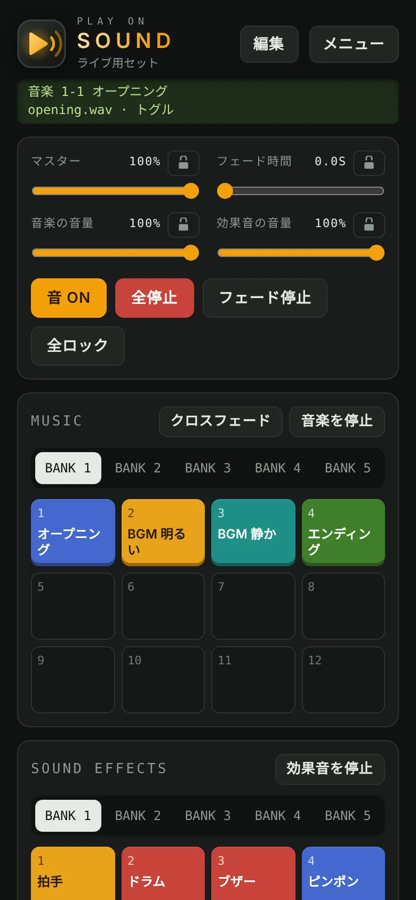
画面の見かた
開くと、上から順に「操作ボタン」「ミキサー」「音楽のパッド」「効果音のパッド」が並んでいます。
- 1ヘッダー 左にプロジェクト名、右に「編集」と「メニュー」のボタンがあります。
- 2表示窓（緑の枠） いま触っているパッドの名前・ファイル名・再生方法が出ます。
- 3ミキサー マスター・音楽・効果音の音量と、フェード時間を調整します。
- 4MUSIC（音楽） BGMや曲を入れる場所です。5つのバンク × 12個のパッドがあります。
- 5SOUND EFFECTS（効果音） 拍手やブザーなど、短い音を入れる場所です。こちらも5バンク × 12個です。
横向きでも使えます
スマホを横にすると、パッドが横に広く並びます。ステージで机に置いて使うときに便利です。
横画面の例
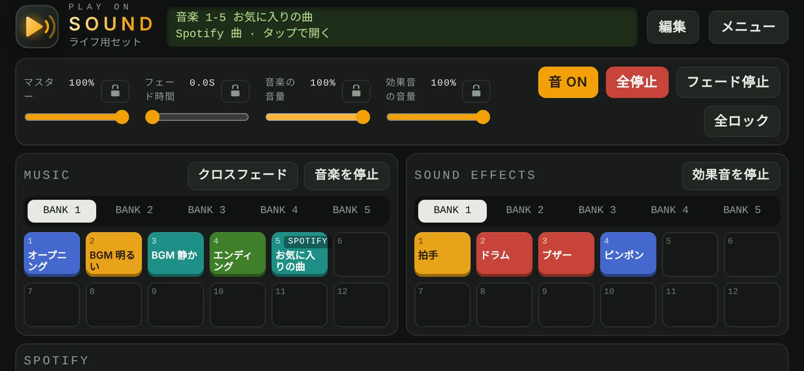
横向きにすると、パッドが6列で並びます。
パッドに音を入れる
最初は、パッドがすべて空っぽです。「編集」をオンにして、音のファイルを1つずつ入れます。
- 右上の「編集」を押してオンにします。パッドのまわりに点線が出ます。
- 音を入れたいパッドをタップします。設定の窓が開きます。
- 「ファイルを選択」を押して、スマホやパソコンの中の音声ファイルを選びます。
- 表示名を付けます（例：オープニング）。パッドの上に出る名前です。
- 好きな色を選びます。本番で見分けやすくなります。
- 「決定」を押します。もう一度「編集」を押してオフにすると、演奏できます。
外したいときは：パッドの設定の窓で「音声・リンクを外す」を押します。名前・色・各設定も、最初の状態に戻ります。
🔊 動画は最初は消音で再生されます。音を聞くには、動画右下のスピーカーを押してください。
編集 → パッドをタップ → ファイル選択 → 名前 → 色 → 決定
設定の窓（パッドをタップしたとき）
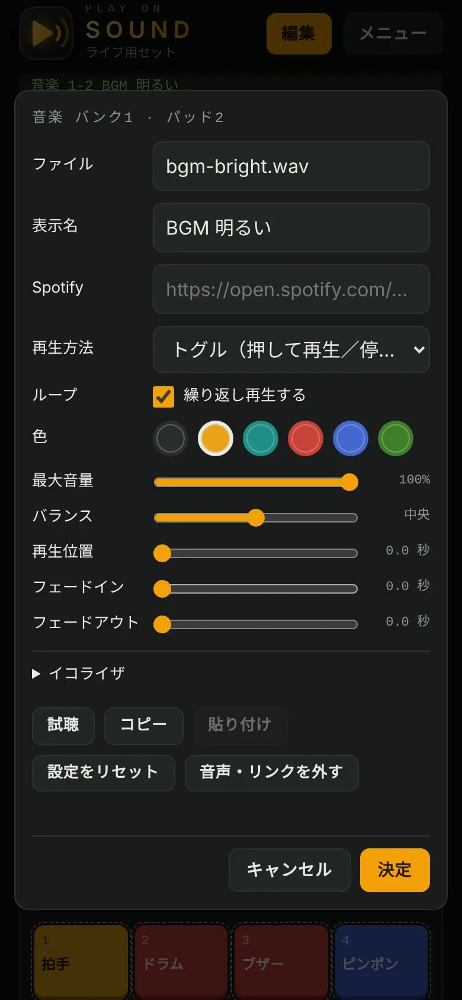
ファイル、表示名、Spotify、再生方法、ループ、色、音量などを、この窓で決めます。
鳴らす・止める
「編集」がオフの状態で、パッドをタップするだけで鳴ります。
- 鳴っているパッドは、白い枠と進行バーで分かります。
- バンクの見出しに赤い点が付くと、そのバンクのどこかが鳴っています。別のバンクを見ていても、鳴っているのが分かります。
- 「トグル」のパッドは、もう一度タップすると止まります。
止めるボタン
| ボタン | はたらき |
|---|---|
| 全停止 | 鳴っている音を、すべて止めます。 |
| 音楽を停止 | 音楽のパッドだけを止めます。 |
| 効果音を停止 | 効果音のパッドだけを止めます。 |
| フェード停止 | ゆっくり音量を下げながら、すべて止めます。 |
| 音 ON / OFF | 押すたびに、全体の音を出す／消すを切り替えます。 |
🔊 動画は最初は消音で再生されます。音を聞くには、動画右下のスピーカーを押してください。
BGMを鳴らし、クロスフェードで次の曲へ。効果音も重ねて鳴らします。
鳴っているときの画面
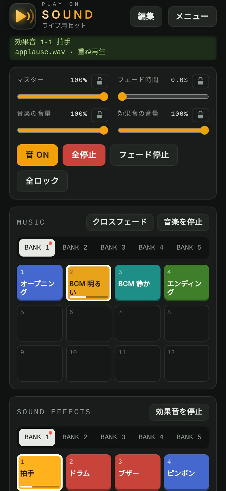
鳴っているパッドは白い枠で囲まれ、下に進行バーが出ます。
4つの再生方法
パッドごとに「どう鳴らすか」を選べます。パッドの設定の窓にある「再生方法」で変えます。
| 再生方法 | 動き | 向いている使い方 |
|---|---|---|
| 無制限（重ね再生） | タップするたびに、重ねて鳴ります。 | 拍手、歓声、短い効果音 |
| ドラム | タップするたびに、前の音を止めて、頭から鳴らし直します。 | ドラム、リズム、連打する音 |
| トグル | タップで再生、もう一度タップで停止します。 | BGM、曲 |
| 押している間だけ | 指を置いている間だけ鳴り、離すと止まります。 | ブザー、アラート音 |
ループ（くり返し）
「ループ」にチェックを入れると、最後まで鳴ったら最初に戻って、くり返し鳴ります。BGMに便利です。
「再生方法」と「ループ」は、この窓にあります。
音量とフェード
画面上部のミキサーで、全体の音を整えます。
| 項目 | はたらき |
|---|---|
| マスター | 全体の音量です。初期値は100%です。 |
| 音楽の音量 | 音楽のパッドだけの音量です。 |
| 効果音の音量 | 効果音のパッドだけの音量です。 |
| フェード時間 | 止めるときや切り替えるときに、音をゆっくり変える長さ（秒）です。 |
| クロスフェード | オンにすると、次の曲を鳴らしたとき、前の曲が重なるように消えていきます。 |
クロスフェードの使い方
- 「MUSIC」のクロスフェードボタンを押してオンにします。
- フェード時間を2秒ほどにします。
- 鳴っている曲があるときに、別の曲のパッドをタップします。
画面の上のほうが、ミキサーです。
音量・フェードのロック
本番中に、うっかりスライダーに触れて音量が変わるのを防ぐ機能です。
- 各スライダーの右にある鍵のボタンを押すと、そのスライダーが固定されます。もう一度押すと解除されます。
- 全ロックボタンで、4つとも一気にロックできます。もう一度押すと、全部解除します。
- マスターをロックすると、フェード時間以外のスライダー（音楽・効果音の音量）も触れなくなります。
ロックの状態は、プロジェクトごとに保存されます。
🔊 動画は最初は消音で再生されます。音を聞くには、動画右下のスピーカーを押してください。
マスターをロックすると、音量のスライダーが動かなくなります。
パッドごとの細かい設定
パッドの設定の窓では、1つずつ音の鳴り方を調整できます。
| 項目 | はたらき |
|---|---|
| 最大音量 | このパッドの音量です。他の音より大きすぎるときに下げます。 |
| バランス | 左右の音の振り分けです。中央が標準です。 |
| 再生位置 | 音の途中から始めたいときの、開始位置（秒）です。 |
| フェードイン | 鳴らし始めに、音がだんだん大きくなる長さです。 |
| フェードアウト | 止めるときに、音がだんだん小さくなる長さです。 |
| イコライザ | 低域・中域・高域の3つで、音色を整えます（±の範囲で調整）。 |
窓の下のボタン
| 試聴 | 決定する前に、いまの設定で鳴らして確認します。 |
| コピー／貼り付け | 設定を別のパッドにコピーします。同じ設定を何個も作るときに便利です。 |
| 設定をリセット | 音量やフェードなどを、初期設定に戻します。音と名前、色は残ります。 |
| 音声・リンクを外す | パッドを空にします。名前・色・各設定も初期の状態に戻ります。 |
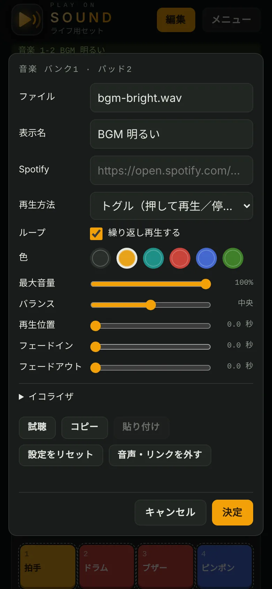
「イコライザ」を開くと、低域・中域・高域のスライダーが出ます。
Spotifyのパッド
SpotifyのURLを貼ると、曲・アルバム・プレイリストを開くパッドが作れます。
- Spotifyアプリで、曲やプレイリストの「共有」→「リンクをコピー」をします。
- 「編集」をオンにして、パッドをタップします。
- Spotifyの欄に、コピーしたURLを貼り付けます。
- 名前と色を付けて、「決定」を押します。
パッドの上にSPOTIFYという目印が付きます。タップすると、Spotifyのアプリ（またはWeb）が開きます。
アプリ版での違い
- claude.ai版のアプリ：画面の「Spotify」から曲を検索して、パッドに割り当てられます。
- GitHub公開版：検索はなく、URLを貼る方法を使います。メニューの「設定」で「ページ内のプレーヤーで開く」をオンにすると、画面の下に小さなプレーヤーが出て、ページから離れずに再生できます。
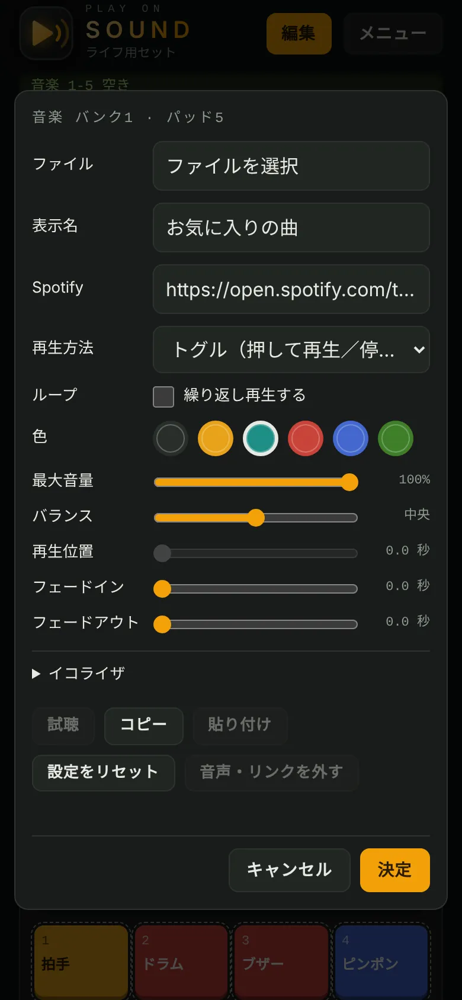
URLを貼る
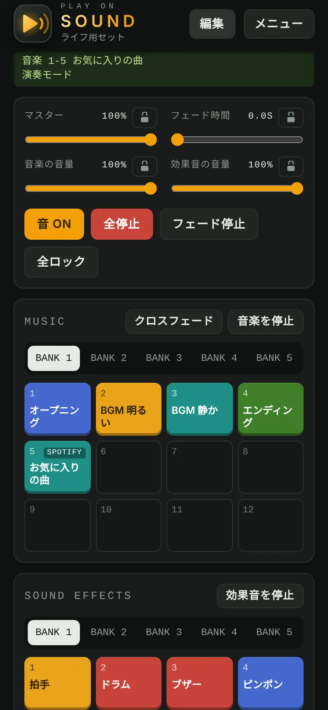
目印が付く
プロジェクトの保存と管理
パッドの内容を1つのまとまり（プロジェクト）として、いくつでも保存できます。ライブごと、イベントごとに分けておくと便利です。
変更は、そのつど自動で保存されます。保存ボタンを押し忘れても大丈夫です。
右上の「メニュー」から、次の操作ができます。
| メニュー | はたらき |
|---|---|
| 新規作成 | 空のプロジェクトを作って、切り替えます。 |
| 開く | 保存してあるプロジェクトの一覧から選んで、開きます。 |
| 上書き保存 | いまの状態を、いますぐ保存します。 |
| 名前を付けて保存 | 音も含めて複製し、別の名前で保存します。 |
| 削除 | 選んだプロジェクトを削除します。元に戻せません。 |
| ファイルに書き出す | プロジェクトを、音ごと1つのファイルにします。バックアップや、別の端末への引っ越しに使います。 |
| ファイルから読み込む | 書き出したファイルを、新しいプロジェクトとして開きます。 |
🔊 動画は最初は消音で再生されます。音を聞くには、動画右下のスピーカーを押してください。
名前を付けて保存 → 新規作成 → 開くで切り替え
メニューの画面
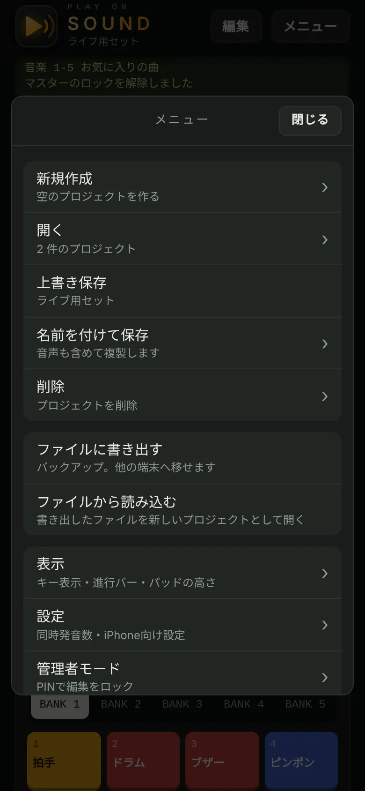
メニュー
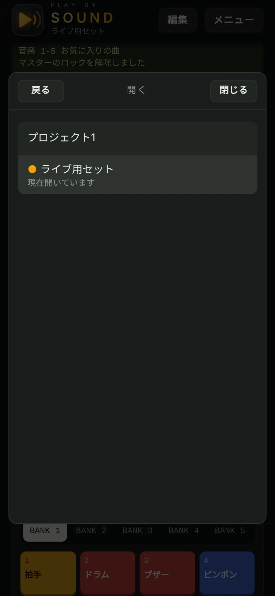
開く
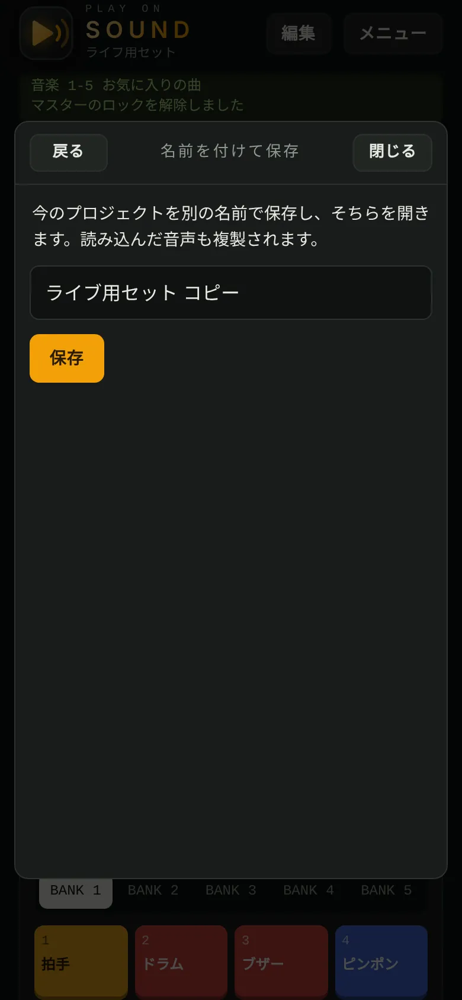
名前を付けて保存
表示と設定、ロック
表示
- キーの表示：パッドにキーボードのキー名を出すかを選びます。「自動」は、キーボードのある環境でだけ出します。
- 進行バー：パッドの下の、再生位置のバーを出すかを選びます。
- パッドの高さ：パッドの縦の大きさを「低・標準・高」から選びます。
設定
- 同時発音数：同時に鳴らせる音の数です。古い端末で音が途切れるときは、数を減らします。
- 消音スイッチでも鳴らす：iPhoneの消音スイッチがオンでも音が出るようにします。
- 画面をスリープさせない：演奏中に画面が消えないようにします。
- すべてのデータを消去：全プロジェクトと音声を消します。元に戻せません。
管理者モード（編集のロック）
4〜8桁のPINを決めて、ロックを有効にできます。ロック中は、編集・Spotify検索・新規作成・保存・削除ができません。演奏と音量の操作は、そのまま使えます。他の人にステージ操作を任せるときに便利です。
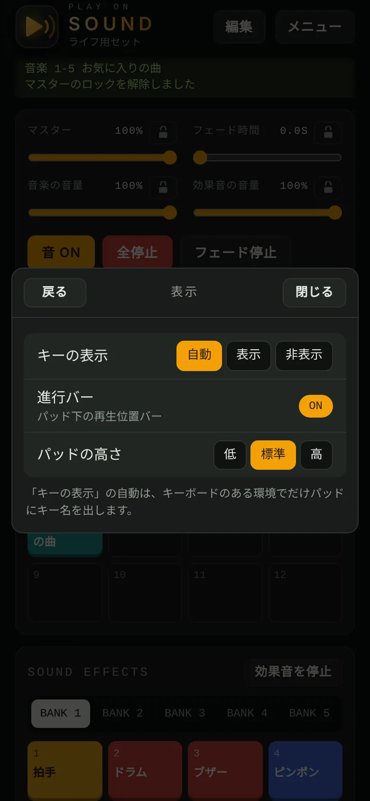
表示
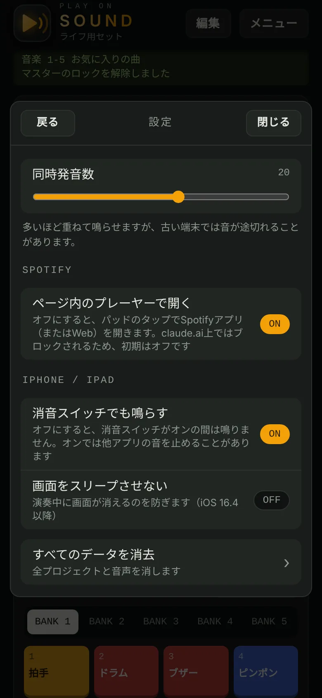
設定
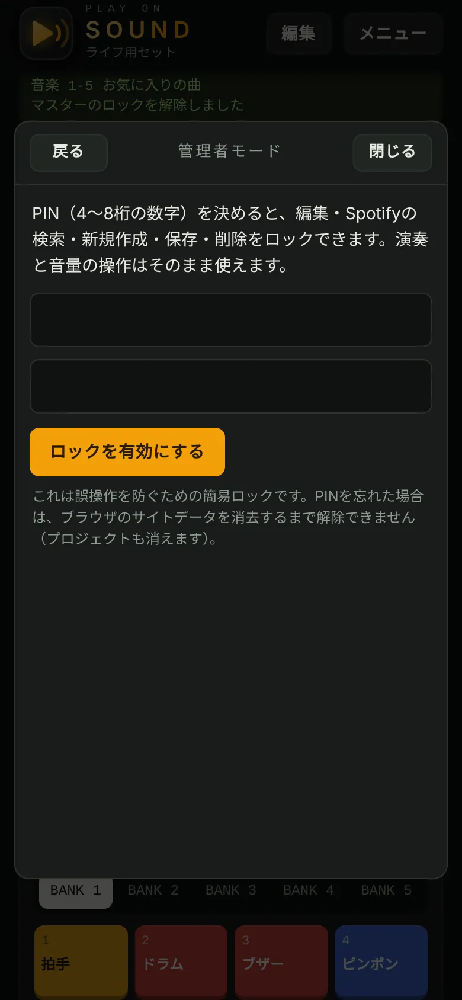
管理者モード
iPhone・オフラインで使うコツ
- 最初のタップで音が使えるようになります。鳴らないときは、もう一度タップしてください。
- 消音スイッチがオンだと鳴らないことがあります。メニューの「設定」→「消音スイッチでも鳴らす」をオンにしてください。
- ホーム画面に追加すると、アプリのように全画面で使えます。iPhoneは、Safariの共有ボタンから「ホーム画面に追加」。Androidは、ブラウザのメニューから「アプリをインストール」または「ホーム画面に追加」です。
- オフライン：GitHub公開版は、一度開いておけば、電波がなくても開いて鳴らせます。
- 長い音声は、メモリを多く使います。数分以内のファイルをおすすめします。
キーボードで操作する
パソコンでは、キーボードでもパッドを鳴らせます。表示中のバンクの12個のパッドが、キーに割り当てられています。
| パッド | 1 | 2 | 3 | 4 | 5 | 6 | 7 | 8 | 9 | 10 | 11 | 12 |
|---|---|---|---|---|---|---|---|---|---|---|---|---|
| 音楽 | 1 | 2 | 3 | 4 | Q | W | E | R | A | S | D | F |
| 効果音 | 7 | 8 | 9 | 0 | U | I | O | P | J | K | L | ; |
Esc キーで、すべての音を止めます。
よくある質問
音が鳴りません
最初に画面を1回タップして、もう一度パッドを押してください。それでも鳴らないときは、「音 OFF」になっていないか、マスターや音量のスライダーが0になっていないか、端末の音量が下がっていないかを確認してください。iPhoneは、消音スイッチと、設定の「消音スイッチでも鳴らす」も確認してください。
ブラウザを閉じたら、パッドの中身は消えますか？
消えません。自動で保存されていて、次に開いたときも残っています。ただし、プライベートブラウズの場合や、ブラウザのデータを消した場合は消えます。
他のスマホやパソコンでも同じパッドを使いたい
メニューの「ファイルに書き出す」でファイルを作り、別の端末で「ファイルから読み込む」を使ってください。音も一緒に移せます。
どんな音声ファイルが使えますか？
お使いのブラウザで再生できる音声ファイル（MP3、WAV、M4Aなど）が使えます。1ファイル25MBまでです。
Spotifyの曲にフェードやループをかけられますか？
できません。Spotifyの音は、Spotify側で再生されるため、このアプリでは加工できません。フェードやループが必要な曲は、お持ちの音声ファイルをパッドに入れてください。
パッドを間違えて消してしまいました
元に戻す機能はありません。大事なプロジェクトは、あらかじめ「名前を付けて保存」や「ファイルに書き出す」でバックアップしておくと安心です。
本番中に操作ミスをしたくない
「編集」をオフにしておくと、タップで鳴らすだけになります。さらに、スライダーの「全ロック」や、「管理者モード」で編集のロックを使うと、安心です。